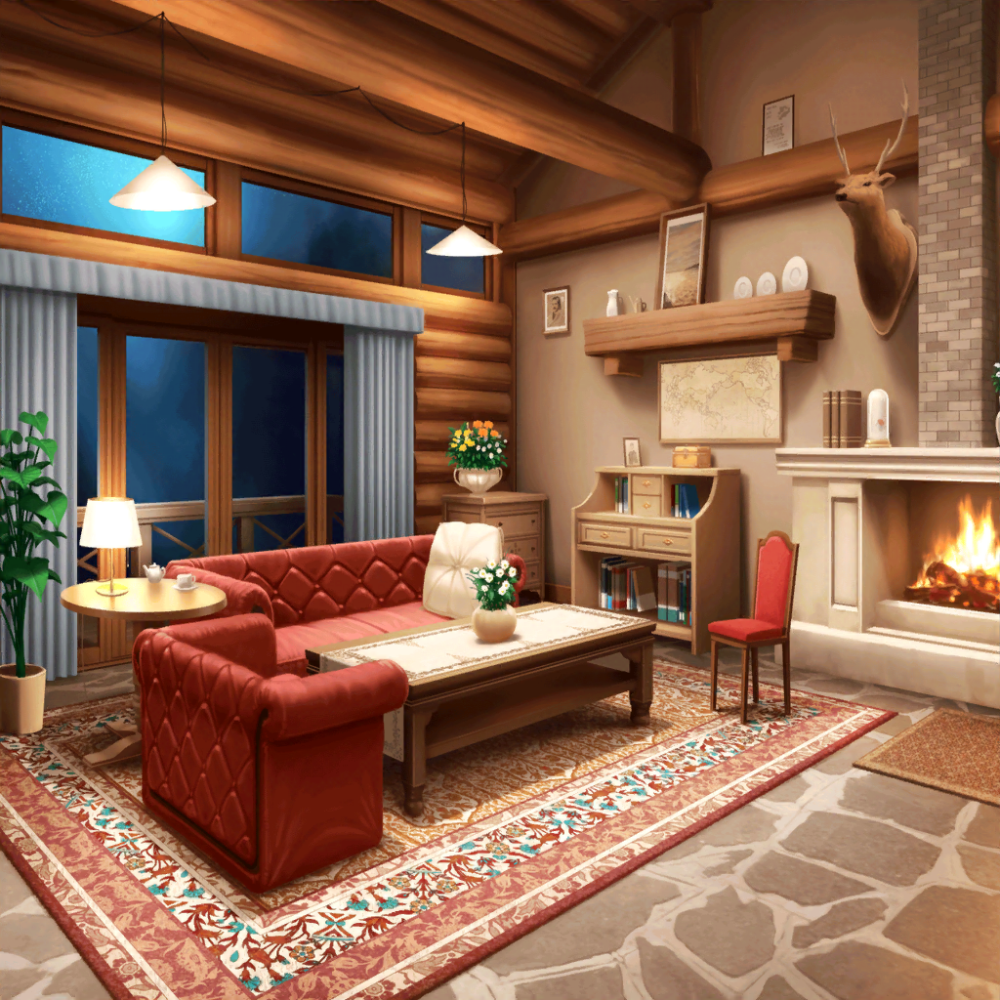

弦巻家 コテージ
香澄
ふぁ…………
香澄
んんぅ……眠くなってきた……
蘭
香澄が天体観測ツアー行こうって言いだしたのに……
日菜
香澄ちゃん、もう少しすれば流星群見られるから頑張って！
香澄
うぅ……頑張りま……す……
つぐみ
私も、もう……
蘭
つぐみ、せっかく来たのに星見ないで終わっていいの？
つぐみ
それは嫌だけど、でも……ううん、頑張らなきゃ……
蘭ちゃんは平気なの？
蘭
あたしは、普段から夜遅くまで起きてるから
日菜
あたしも！
夜のほうが頭がスーっとして、活動しやすいんだよね
こころ
ふぁ……あたしも、そろそろ寝ようかしら。
ちょっとぐらい寝ても大丈夫よね
日菜
寝てる間に流星群見逃すかもしれないよ？
こころちゃん、我慢我慢！
こころ
それじゃあ、眠気が覚めるような話をしてくれないかしら？
日菜
眠気が覚めるような？
んー、怖い話とか？
つぐみ
こ、怖い話は……ちょっと遠慮したいです……
香澄
わかったっ！ 今からランダムスター、弾くよ！
蘭
え？
ちょっと、待っ……
香澄
それ……！
つぐみ
わぁ、なんか少し元気が出るかも！
こころ
いいわね！
目が覚めてきたわ！
こころ
～～♪ ～～～～♪
香澄
～～♪ ～～～～♪
蘭
こころと香澄！
こんな時間にセッションしたら、
別荘の管理人さんに迷惑だって……！
香澄
あ、そっか。
うぅ、ごめん……
つぐみ
私もはしゃいじゃって、ごめんなさい……
香澄
えっと、えっと……それじゃあ、
私が聞いた、星の鼓動の話するよ！
こころ
星の鼓動？
おもしろそうね！ 聞きたいわ！
香澄
実は私、小さい時に星の鼓動を聞いたことがあるんだ。
もう一度、その音が聞きたくて、
天体観測ツアーに参加したの！
香澄
私ね、小さいころに家族で森にキャンプにいって……
その時に星の鼓動を聞いたの！
香澄
今みたいにくらーい森を妹と２人で歩いて……
森を抜けた丘の上からたっくさんの星が見えて！
香澄
その星がね、キラキラ、ドキドキって
音をさせながら輝いてたの！
その時、私の身体の中で、何かが膨らんで弾んだ感じがして……
香澄
私、あの時感じたドキドキをもう一度感じたいと思って、
ここにきたんだ
香澄
ああ、どうしよう……！
思い出したら、また歌いたくなってきちゃった！
もう眠くない！
蘭
ホントだ。
元気になったね
こころ
とっても素敵な話だと思うわ！
みんなで星の鼓動を聞きましょう！
香澄
あの音は、私の始まりの音……
私はあの音を聞いて、何かが始まる気がしたんだ
蘭
何かが始まる……か
蘭
星の鼓動じゃないけどさ……
ギターを始めて鳴らしたとき、
あたしも何かが始まるような気がしたんだ
蘭
ギターの音、弦の感触にドキドキして……
あたしも、身体の奥底から、じわじわって熱いものを感じた
香澄
それそれ！ それと同じだよっ！
私が星の鼓動を聞いたときもそんな感じだった！
香澄
きっと今日、蘭ちゃんにも聞こえるよ！
蘭
うん。そんな気する
日菜
何かがはじまる感じかあ。
それって、すっごく楽しそう！
つぐみ
そうですよね。すっごく、夢のあるお話だなあ……
おかげで眠気が吹き飛んだよ、香澄ちゃん。
星の鼓動聞くまでは、眠れないね
香澄
うんうん！
満点の星空見るまでは絶対寝ないぞー！
蘭
……テンション上げすぎて、疲れなきゃいいけど
こころ
あと１時間くらいかしら？
それくらいなら起きてられそうよね！
香澄
大丈夫大丈夫、起きてられるよ！
だって今、ぜんっぜん眠くないもん！
蘭
ちょっとみんな、テンション高すぎ。
大丈夫なの？
日菜
蘭ちゃん、心配しすぎだってー
みんな、ちゃんと起きてられるから
蘭
だといいんですけど……
こころ
香澄！ つぐみ！ 眠気を覚ますようにもっともっと
色々な話をして過ごしましょう！
香澄
うん！